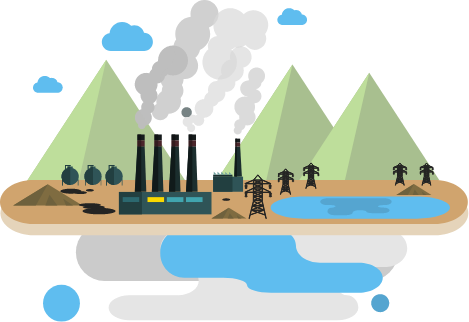
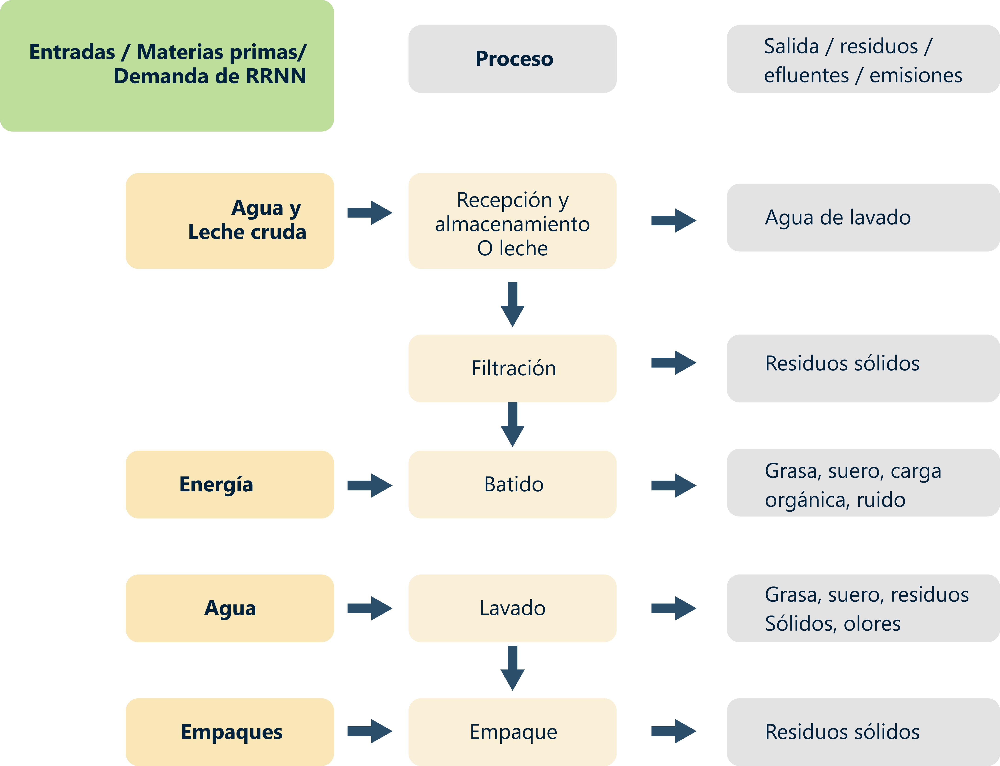
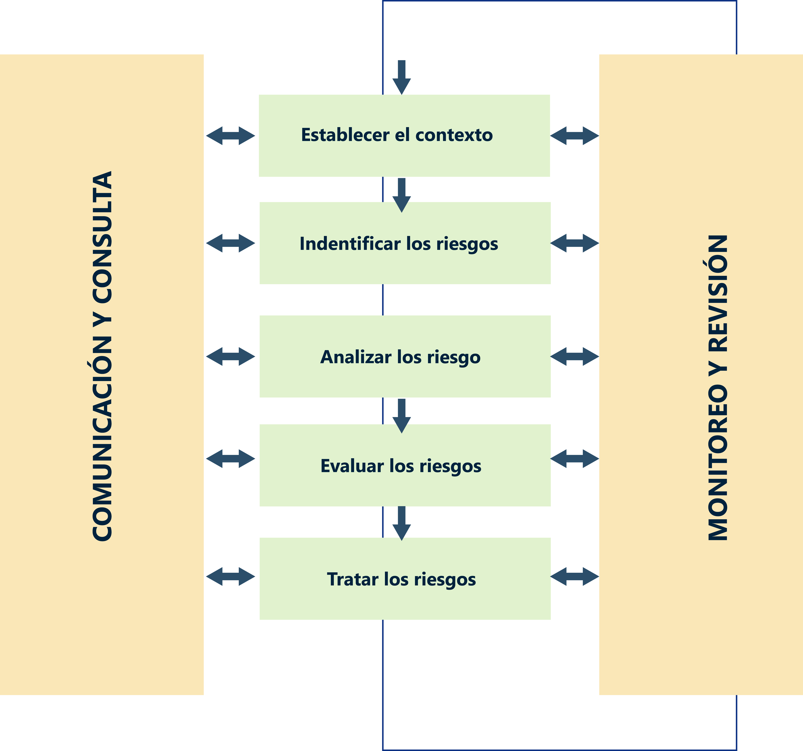
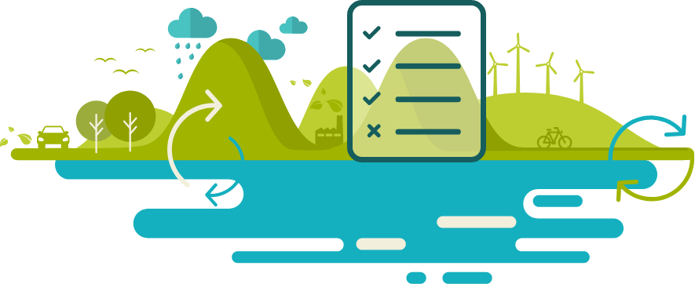
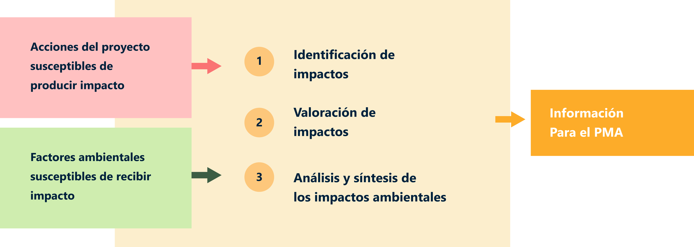
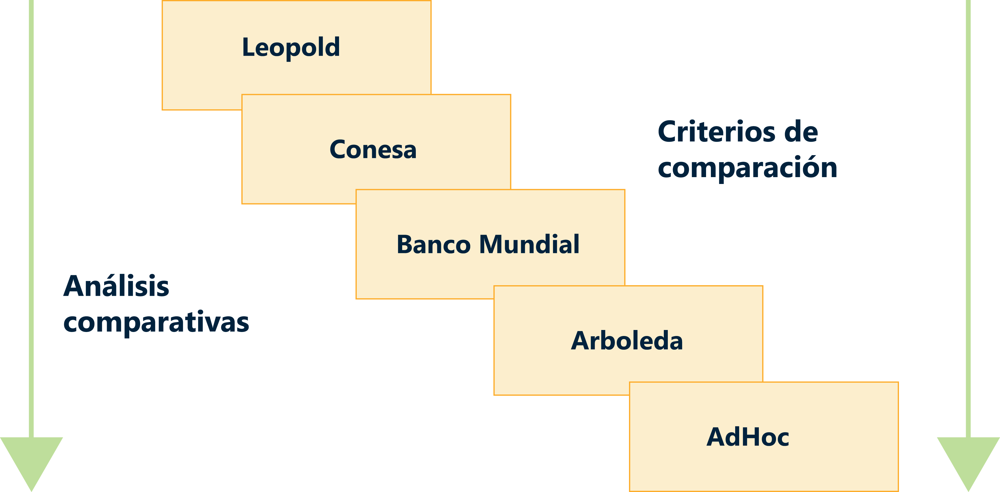
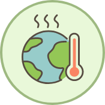
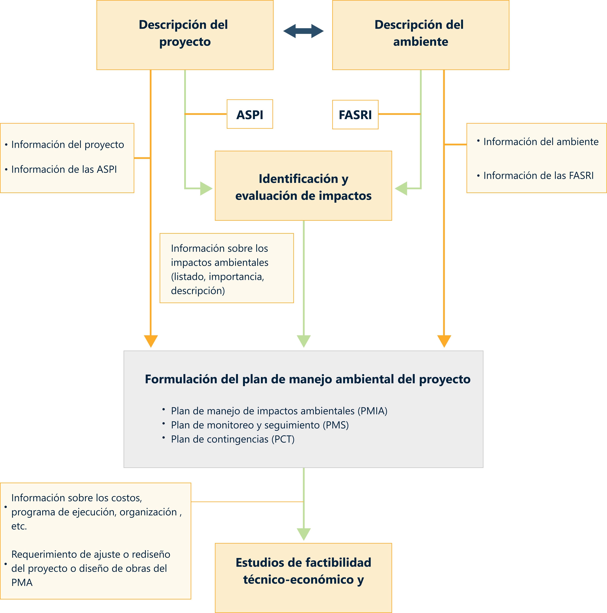

1. Presentación
Un primer paso para comenzar a implementar la gestión ambiental en las organizaciones es realizando un diagnóstico ambiental, para ello el enfoque es la valoración cualitativa y cuantitativa de impactos y riesgos ambientales, de un sistema socioecológico elegido por su equipo colaborativo, lo cual se verá plasmado en un informe tipo diagnóstico donde detalle de manera cualitativa y cuantitativa los impactos y riesgo ambientales del sistema.
Es importante comprender que cualquier proceso de transformación de productos y prestación de servicios, trae consigo la generación de impactos ambientales positivos y negativos que afectan los sistemas socioecológicos, debido a las prácticas insostenibles y el incumplimiento de las diferentes normas, acuerdos y políticas que regulan estas actividades.
Por lo anterior, el diagnóstico del estado actual del sistema se convierte en una herramienta de análisis necesaria para la identificación de los aspectos e impactos ambientales y que, a su vez, le permite la formulación de un plan de acción para el mejoramiento del desempeño ambiental de la organización o proyecto, para así definir medidas de prevención y mitigación ambiental.
2. Introducción evaluación de Impacto ambiental
Muchas de las actividades humanas, pero en especial aquellas de producción o prestación de bienes y servicios, suministro de materias primas y desarrollo de infraestructura, interactúan de alguna manera con el entorno donde se emplazan, tanto en su construcción como en su operación. Por ejemplo, consumen recursos naturales, remueven vegetación, utilizan suelos productivos, modifican el paisaje, desplazan personas, producen residuos o emisiones, etc. Es decir, generan cambios en las condiciones ambientales que pueden ser muy variables en cuanto a su significancia, magnitud, duración, extensión, etc.
El resultado de esta relación proyecto-ambiente a lo largo del tiempo ha conducido a un proceso de deterioro o pérdida de la calidad ambiental que se ha acentuado en las últimas décadas, llegando a extremos preocupantes, en algunas ocasiones insostenibles o desembocando en situaciones de tipo global, que están poniendo en riesgo la salud, el bienestar y aún la supervivencia del ser humano.
Esta situación ha generado entonces un movimiento mundial que busca revertir, o por lo menos reducir esta tasa de deterioro, que se ha consolidado dentro del concepto de desarrollo sostenible que se empezó a acuñar desde la cumbre de Río.
Para consolidar los postulados del desarrollo sostenible, se han propuesto diferentes estrategias y mecanismos, tales como fortalecer las instituciones ambientales, formular políticas y normas ambientales de obligatorio cumplimiento, alentar la acción voluntaria mediante el montaje de sistemas de gestión ambiental y la producción más limpia, estimular la participación de la comunidad para que tome posiciones frente al deterioro o establecer instrumentos de gestión para el análisis ambiental de los proyectos.
Dentro de estos últimos se destaca la Evaluación de Impacto Ambiental (EIA), como la herramienta que permite determinar no solo las consecuencias ambientales de cualquier emprendimiento, sino también proponer las acciones necesarias para atender dichas secuelas.
Sin embargo, se debe tener presente que el hecho de que un proyecto o actividad altere significativamente el ambiente, no significa que no sea viable, ya que la viabilidad no se mide por la generación de impactos positivos o negativos sino por la capacidad del ambiente de recuperarse ya sea por medios naturales o artificiales y de los promotores de los proyectos de hacer un manejo adecuado de los impactos; de tal forma, que se pueda garantizar un nuevo equilibrio proyecto ambiente que refleje en términos absolutos una igual o mejor calidad en las condiciones del ambiente afectado.
Es por eso que se puede decir en términos generales que el objetivo de la evaluación de impacto ambiental, “es encontrar las soluciones que den armonía a la relación proyecto/sistema ambiental.
De lo que se trata es de estudiar el medio, descubrir los procesos y funciones de sus componentes, analizar su sensibilidad, o sea el grado de vulnerabilidad, sus debilidades y fortalezas, para diagnosticar su real capacidad de recuperación frente a las acciones y procesos producidos por la obra y su energía desplegada, y suplir con medidas artificiales los desajustes de la relación proyecto/ambiente.” (Charla del profesor Manuel Zárate, Panamá, 2004).
Citado de: Arboleda, J. A. (2008). Manual de evaluación de impacto ambiental de proyectos, obra o actividades. Medellin, Colombia.
lo invitamos a visualizar el siguiente video Noticias Caracol (2018 agosto 12). Ituango vive la peor crisis tras emergencia del proyecto hidroeléctrico | Noticias Caracol.
3. Bases conceptuales para la evaluación y valoración de los aspectos, impactos y riesgos ambientales
3.1 Introducción
Es obvio que, si el impacto ambiental es el resultado de la interacción entre un proyecto o actividad propuesta y el ambiente, para identificar los impactos es indispensable empezar por un buen conocimiento del proyecto, obra o actividad propuesto, de sus componentes, sus procesos constructivos y operativos, las etapas de desarrollo que comprende, etc.
Es por esto que es indispensable describir cuales son los procesos que se llevan a cabo al interior de la organización o proyecto para llegar a la identificación de los aspectos e impactos ambientales.
Se requiere entonces realizar una lectura de la información técnica, de ingeniería y operacional del proyecto “con ojos ambientales”, es decir, realizar un análisis de la documentación correspondiente con la finalidad de detectar aquellas acciones (actividades, operaciones, procedimientos, elementos, aspectos, tareas, etc.) del proyecto, obra o actividad que están relacionándose de cualquier manera con el medio ambiente, porque son éstas las que producirán, directa o indirectamente, los cambios en algunos de los componentes de dicho entorno.
Estas acciones se denominan: Acciones susceptibles de producir impacto (ASPI), por tanto, se requiere identificar los aspectos e impactos relacionados. Se relaciona según Arboleda, un listado general de aspectos ambientales y su correspondiente impacto ambiental.
Listado general de aspectos e impactos ambientales:
A continuación, se relacionan algunas tablas que se relacionan en el Manual de Evaluación de Impactos Ambientales para proyectos, obra actividades.
Jorge A, Arboleda (2008) Manual de Evaluación de Impacto Ambiental de Proyectos, Obras o Actividades. p. 18.
Por tanto, con lo visto en la unidad, podemos resumir lo siguiente, es indispensable identificar los componentes ambientales en el área de influencia directa e indirecta y comprender los procesos a los que se dedica la organización a manera de plano de localización y diagrama de flujo de procesos.
Ejemplo 1:
Identificación de áreas, procesos y componentesde un proyecto, obra o actividad.
|
Fábrica por construir y localizada en zona rural |
|
|
Etapa |
Componentes |
|
Construcción |
|
|
Funcionamiento |
|

Ejemplo 2:
Diagrama de flujo para la fabricación de mantequilla, con sus respectivas entradas y salidas identificando aspectos ambientales.

Fuente: Jorge A, A (2008). Manual de Evaluación de Impactos Ambientales para proyectos, obra actividades. Pág. 25.
Ejemplo 3:
Descripción de las ASPI (acciones susceptibles de producir impactos), de un proyecto, obra o actividad.
|
Fase (2) |
|||
|
Etapa (1) |
Industriales/urbanísticos (3) |
Concentrados (4) |
Lineales (5) |
|
Planeación o estudios |
|
|
|
|
Construcción / Ejecución |
|
|
|
|
Operación y mantenimiento |
|
|
|
|
Terminación (Desmantelamiento) |
|
|
|
Ejemplo 4:
Descripción de ASPI, ASPECTOS e IMPACTOS ambientales de un proyecto, obra o actividad.
|
ASPI |
Aspecto ambiental |
Impacto ambiental |
|
Remoción vegetal y descapote |
Intervención del suelo. |
Alteración de las propiedades fisicoquímicas del suelo. |
|
Intervención de la cobertura vegetal. |
Procesos erosivos. |
|
|
Intervención de la fauna. |
Afectación de la avifauna. |
|
|
Generación de excedentes de excavación. |
Contaminación del suelo. |
|
|
Aporte de sedimentos a los sistemas hídricos. |
Afectación del ciclo hidrológico Contaminación del recurso hídrico. |
|
|
Demolición de estructuras existentes |
Emisión de gases y/o material particulado. |
Contaminación del aire. |
|
Intervención del suelo. |
Alteración de las propiedades fisicoquímicas del suelo. |
|
|
Generación de escombros. |
Generación de escombros. |
|
|
Consumo de Energía. |
Contaminación del suelo. |
|
|
Intervención de cuerpos de agua. |
Contaminación del recurso hídrico. |
|
|
Emisión de ruido. |
Contaminación del aire. |
|
|
Aporte de sedimentos a los sistemas hídricos. |
Alteración de la calidad del agua. |
|
|
Const. Instalaciones temporales |
Generación de residuos solidos. |
Contaminación del suelo y cuerpos de agua. |
|
Aporte de sedimentos a los sistemas hídricos. |
Sedimentación de quebradas. Reducción de la capacidad hidráulica. |
|
|
Consumo de materiales e insumos. |
Agotamiento de recursos naturales. |
|
|
Emisión de ruido. |
Contaminación del aire por ruido. |
|
|
Intervención de suelo. |
Alteración de las propiedades fisicoquímicas del suelo. |
Partiendo de esta base de identificación de impactos, entraremos a realizar la valoración de estos.
3.2 La valoración ambiental
Es el conjunto de elementos, características, procesos que dotan al medio ambiente de una serie de cualidades y méritos en los que se basa la necesidad de su conservación (Conesa, 1997).
Esta valoración es el resultado del proceso de análisis y procesamiento de la información recolectada, por medio del cual se valora o cualifica la calidad de los componentes y factores del ambiente estudiado, permitiendo entonces sacar conclusiones sobre su importancia y apoyar de esta manera la toma de decisiones sobre las posibilidades de intervenirlo con el proyecto o de conservarlo en su estado actual.
Actividad didáctica: XXXXXXXXXXXXXXXXXXX.
Acabamos de ver algunos usos del mercurio que fueron surgiendo en la historia de la humanidad, sin embargo, existen otros que exploraremos a continuación, por ello es necesario que realice la actividad de aprendizaje Procesos y Productos en donde encontrará unas preguntas de identificación de productos y procesos con mercurio añadido.
Iniciar actividad3.3 Tipos de valor
Ecológico:
Este valor estriba principalmente en su importancia e interés para la ciencia, la técnica y la cultura; por ser aprovisionadores de recursos o receptores de actividades; por la reserva genética depositada en ellos.
Productivo:
El medio ambiente en general y cada sistema en particular produce bienes y servicios en mayor o menos medida, bien en forma de recursos accesibles (disponibles) o potenciales (no disponibles, con las técnicas actuales). Por lo tanto, este valor debe reflejar la capacidad productiva del ambiente.
Paisajístico:
Se refiere a los valores perceptuales incluyendo consideraciones de orden estético. Denota la expresión de los valores estéticos, plásticos y emocionales del medio natural.
Sociocultural:
Estriba en la importancia e interés de las estructuras y condiciones sociales e histórico-culturales de las comunidades humanas o de la población de un área determinada.
3.4 Criterios para la valoración ambiental
El valor ambiental de un factor es directamente proporcional al grado de caracterización cualitativa que producen las siguientes consideraciones, las cuales pueden tomarse como aspectos que posibilitan la determinación de la valoración ambiental (Conesa, 1997):
Actividad didáctica: XXXXXXXXXXXXXXXXXXX.
Acabamos de ver algunos usos del mercurio que fueron surgiendo en la historia de la humanidad, sin embargo, existen otros que exploraremos a continuación, por ello es necesario que realice la actividad de aprendizaje Procesos y Productos en donde encontrará unas preguntas de identificación de productos y procesos con mercurio añadido.
Iniciar actividad3.5 La capacidad de acogida o sensibilidad ambiental
La capacidad de acogida es la aptitud que presenta un determinado territorio para recibir las consecuencias positivas y negativas que se pueden derivar de la construcción o el funcionamiento de un proyecto (Conesa, 1997).
Para su determinación se ha utilizado el concepto de la “sensibilidad ambiental” la cual se define como la mayor o menor capacidad de un sistema natural o social, para asimilar la acción de agentes externos sobre alguna de sus partes, sin que se produzcan cambios en la estructura o las propiedades de esas partes, de una magnitud tal que las alteren significativamente en comparación con su estado original.
Esta sensibilidad ambiental no puede entenderse si se piensa en el sistema como un todo, puesto que la acción de los agentes externos se realiza, necesariamente, sobre componentes específicos del sistema.
Existen diferentes criterios para calificar la sensibilidad ambiental, sin embargo, puede partirse de una escala inversa de tres rangos, así:
Sensibilidad ambiental alta:
Cuando el sistema tiene poca capacidad para asimilar los cambios introducidos en sus componentes por la acción de un proyecto o actividad, aún si esta acción tiene una magnitud menor.
Sensibilidad ambiental media:
El sistema tiene una capacidad moderada para asimilar las acciones propuestas sobre sus componentes; puede decirse que las respuestas de esos componentes son proporcionales a la magnitud de la acción de tales proyectos.
Sensibilidad ambiental baja:
Cuando la acción de un proyecto o actividad, aún si tiene una magnitud considerable, produce cambios menores en la estructura o propiedades del componente sobre el cual actúa.
3.6 Características de los impactos
En respuesta a la forma como se ejecuta o realiza la acción que produce el impacto y de acuerdo con las condiciones del factor ambiental que está siendo afectado por dicha acción (línea base), se generan características especiales en los impactos, que le establecen atributos particulares a cada uno de ellos.
Identificar estas particularidades es la mayor dificultad en las evaluaciones y por eso la mayoría de los métodos de evaluación tratan de calificar algunos de estos atributos con el fin de determinar la significación o gravedad del impacto.
En la siguiente tabla se presenta una lista de algunas de estas características, obtenida del libro de Vicente Conesa, (1997) Guía metodológica para la evaluación de impacto ambiental.
|
Característica |
Definición |
|
Clase |
Se refiere al carácter beneficioso o perjudicial de las distintas acciones que van a actuar sobre los distintos factores considerados. |
|
Intensidad |
Expresa “el grado de incidencia de la acción que produce el impacto sobre el factor ambiental considerado, en el ámbito específico en el que actúa”. Es decir, indica la significancia del cambio producido por el proyecto sobre el factor ambiental que se está considerando. |
|
Extensión |
Es el área de influencia teórica o territorio hasta donde se extienden las consecuencias del impacto. Puede ser puntual, local, regional, nacional o global. |
|
Momento |
El momento o plazo de manifestación, se refiere al tiempo transcurrido entre la aparición o inicio de la acción que produce el impacto y el comienzo de las afectaciones sobre el factor considerado. Se evalúa en términos de tiempo y puede ser inmediato, a corto, mediano o largo plazo. |
|
Persistencia o Duración |
Se refiere al tiempo que supuestamente permanecerá el impacto desde cuando hace su aparición y hasta el momento a partir del cual el factor afectado retorna a las condiciones iniciales previas, ya sea por medios naturales o mediante la introducción de medidas correctoras”. Se evalúa en términos de tiempo de duración (fugaz, temporal o permanente). |
|
Reversibilidad |
Se refiere a la posibilidad de reconstrucción en forma natural del factor afectado como consecuencia de la acción acometida, es decir, la posibilidad de que éste retorne a las condiciones iniciales previas a la acción, por medios naturales, una vez aquella deje de actuar sobre el medio”. Se evalúa en términos del tiempo que se demora la reconstrucción del factor. |
|
Recuperabilidad |
Se refiere a la posibilidad de reconstrucción, total o parcial, del factor afectado como consecuencia de la actividad acometida, es decir, la posibilidad de retornar a las condiciones iniciales previas a la acción, por medio de la intervención humana o sea mediante la implementación de medidas de manejo ambiental. Se evalúa en términos de la posibilidad de recuperación. |
|
Relación causa-efecto |
Este atributo se refiere a la forma de manifestación del efecto sobre un factor, como consecuencia de una acción. Puede ser directo o primario, cuando éste se da en el mismo tiempo y lugar donde se presenta la acción, o indirecto o secundario, cuando la manifestación no es consecuencia directa de la acción, sino que se genera a partir de un efecto primario, actuando en otro tiempo y lugar. |
|
Interacción de los efectos |
Se refiere a la forma como se manifiestan las consecuencias del impacto. Puede ser de un modo simple o sea cuando se manifiesta sobre un solo componente ambiental sin inducir nuevos impactos; acumulativo cuando acumula o genera nuevas consecuencias o sinérgico cuando el resultado de acciones individuales menores actuando simultáneamente generan una incidencia mayor. |
|
Periodicidad |
Se refiere a la regularidad con que se manifiesta el impacto, ya sea cíclico, continuo o Intermitente. |
3.7 Gestión del riesgo
Según la GTC 104 DE 2009 Riesgo es la posibilidad de que suceda algo que tendrá impacto en los objetivos.
El riesgo se puede originar en un evento, una acción o en la falta de acción. Las consecuencias pueden ir desde lo benéfico hasta lo catastrófico.
El riesgo para el ambiente se puede presentar en forma de "perturbación" causada por la actividad (o inactividad) humana que lleva a la degradación o a la pérdida de la sostenibilidad.
La gestión del riesgo comprende la cultura, procesos y estructuras que se orientan hacia el aprovechamiento de las oportunidades potenciales al tiempo que se manejan los efectos adversos ICONTEC (2006) NTC 5254 Gestión del riesgo.
La gestión del riesgo concierne a todo el mundo y nunca es responsabilidad exclusiva de la alta dirección, los gerentes ni del consultor de riesgos de la organización.
Exige el compromiso y la energía desde la alta dirección hasta los empleados, quienes pueden ser los primeros en ver un incidente, un peligro potencial o una oportunidad de mejora.
La información de entrada también puede provenir de las partes interesadas.
Como lo ilustra la trayectoria de retroalimentación todo el proceso de gestión del riesgo es iterativo. El proceso se puede repetir muchas veces con criterios adicionales o modificados para la evaluación del riesgo que conducen a un proceso de mejora continua.

Riesgo Ambiental
El riesgo ambiental se origina en la relación entre los seres humanos, sus actividades y el ambiente.
La gestión del riesgo ecológico, que trata sobre los riesgos asociados con las actividades humanas pasadas, presentes y futuras sobre la flora, la fauna y los ecosistemas, es un subconjunto de la gestión del riesgo ambiental.
Los riesgos ambientales se pueden agrupar en dos categorías: Riesgo para el ambiente, y Riesgo para una organización debido a temas relacionados con el ambiente.
Riesgo para el ambiente
Este tipo de riesgo reconoce que las actividades de una organización pueden causar alguna forma de cambio ambiental. Los riesgos ambientales se pueden relacionar con la flora y la fauna; la salud y el bienestar humanos; la prosperidad cultural y social; los recursos terrestres, acuáticos y aéreos; la energía y el clima. Es necesario definir el alcance de cada estudio particular.
Riesgo para una organización debido a temas relacionados con el ambiente
Esto incluye el riesgo de no cumplir la legislación y criterios existentes (o futuros). Otros riesgos incluyen las pérdidas de negocios que puede sufrir una organización como resultado de una gestión pobre, como es el caso de pérdida de reputación, multas, costos de litigios y por no asegurar y mantener los permisos y licencias para el desarrollo y las actividades operativas.
Los problemas de salud y seguridad y la gestión del riesgo para el manejo de emergencias pueden ser problemas significativos para el riesgo ambiental. Sin embargo, ya que otras guías abordan la orientación para estos problemas, y para evitar la duplicación, no se tratan en esta guía.
La gestión del riesgo ambiental proporciona un conjunto formal de procesos que ayuda en la toma de decisiones que afectan el ambiente y orienta a los encargados de tomar decisiones en lo relativo a tratar la incertidumbre.
Actividad didáctica: XXXXXXXXXXXXXXXXXXX.
Acabamos de ver algunos usos del mercurio que fueron surgiendo en la historia de la humanidad, sin embargo, existen otros que exploraremos a continuación, por ello es necesario que realice la actividad de aprendizaje Procesos y Productos en donde encontrará unas preguntas de identificación de productos y procesos con mercurio añadido.
Iniciar actividad4. Metodologías de valoración de impactos ambientales
4.1 Valoración de los impactos ambientales

En respuesta a la forma como se ejecuta o realiza la acción que produce el impacto y de acuerdo con las condiciones del factor ambiental que está siendo afectado por dicha acción (línea base). Se generan características especiales en los impactos, que le establecen atributos particulares a cada uno de ellos.
Identificar estas particularidades es la mayor dificultad en las evaluaciones y por eso la mayoría de los métodos de evaluación tratan de calificar algunos de estos atributos con el fin de determinar la significación o gravedad del impacto.
El procedimiento para la realización de esta actividad está compuesto por dos actividades secuenciales, a saber:
La identificación de los impactos:
Corresponde a la determinación de la existencia de un cambio en alguna de las condiciones ambientales por efecto de unas acciones de la organización o proyecto. Básicamente es el procedimiento de interrelacionar las ASPI y las FARI, para determinar donde se generan cambios en los factores ambientales.
La evaluación de los impactos ambientales:
Algunos autores la denominan también valoración y consiste en determinar la significancia de los cambios utilizando metodologías reconocidas.
En la siguiente Imagen se muestra el esquema que se propone para adelantar esta etapa del diagnóstico, el cual comprende las actividades anteriormente descritas y se le adiciona una tercera que tiene que ver con el manejo de la información que se genera con este proceso.

4.2 Metodologías
Existe un gran número de metodologías, las cuales cubren un alto espectro de posibilidades generales o específicas, cualitativas o cuantitativas, sencillas o complejas, con altos o pocos requerimientos de información, con sencillos o sofisticados elementos de cálculo y procesamiento de información, etc.
Este amplio abanico de posibilidades indica que no existe un método universal o mejor que todos que sea aplicable a todo tipo de proyectos o utilizable en cualquier fase de estos.
Es por eso que la selección del método que se debe utilizar para una organización o proyecto debe ser el resultado de un análisis que considere los siguientes aspectos:
El tipo o naturaleza de la organización o proyecto que se esté evaluando.
La fase en que se encuentra.
Los requerimientos y disponibilidad de información.
La naturaleza de los impactos.
Los requisitos legales (específicamente los términos de referencia o las guías ambientales sectoriales).
Los recursos técnicos, financieros y de tiempo disponibles.

De acuerdo con lo anterior y acorde con la metodología asignada por el instructor para realizar la valoración de los impactos de la organización o proyecto se sugiere tener en cuenta la siguiente metodología.
Aunque se aclara que es solo una sugerencia ya que el abanico de metodologías es tan amplio que pueden elegir la más pertinente dependiendo del proyecto.
Imagen con la descripción de algunas de las metodologías más usadas en Colombia en los últimos años:
Fue desarrollado por la Unidad Planeación Recursos Naturales de las Empresas Públicas de Medellín en el año 1986, con el propósito de evaluar proyectos de aprovechamiento hidráulico de la empresa, pero posteriormente se utilizó para evaluar todo tipo de proyectos de EPM y ha sido utilizado por otros evaluadores para muchos tipos de proyectos con resultados favorables. Este método ha sido aprobado por las autoridades ambientales colombianas y por entidades internacionales como el Banco Mundial y el BID. Ver instructivo en material de apoyo.
¡Estimado Aprendiz!
Para profundizar en el tema lo invitamos a consultar el siguiente material de apoyo.
Valoración de impactos metodología EPM o Arboleda
Canter y Sadler (1997) clasificaron las metodologías para la evaluación de impacto ambiental en veintidós grupos listados alfabéticamente y no en orden de importancia o de uso, los cuales se describen a continuación:
Los Sistemas Expertos son típicamente amigables al usuario y sólo requieren la respuesta a una serie de preguntas para conducir a un análisis particular. Se está incrementado la atención al desarrollo de sistemas expertos más exhaustivos para los procesos de EIA.
Los índices numéricos o descriptivos se han desarrollado como una medida de la vulnerabilidad del medio ambiente y los recursos a la contaminación u otras acciones humanas y han probado su utilidad en la comparación de localizaciones para una actividad propuesta. Sobre estas bases, pueden ser formuladas las medidas para minimizar los impactos ambientales e incluir controles.
Sobre el frizo de imágenes de clic para que se despliegue la información de las últimas 6 metodologías para la valoración de impactos.
Para seleccionar una metodología, se recomienda tomar en cuenta algunas características importantes como: si da una visión global, si es selectivo, mutuamente excluyente, si considera la incertidumbre, si es objetivo e interactivo.
Entre las varias metodologías generales existentes cualitativas y/o cuantitativas más usadas son:

Listas de chequeo.
Diagramas de redes.
Superposición de mapas.
Matrices causa – efecto.
Para ampliar la información a los diferentes tipos de metodologías de valoración dirigirse a material de apoyo Manual para la evaluación de impactos ambiental de proyecto, obra o actividad de Jorge Arboleda página 56 a la 105.
4.3 metodologia para la identificación y valoración de riesgos ambientales gtc 104 de 2009
Respetado aprendiz, revise la siguiente información Cada punto es importante, por tanto, revise los pasos y las metodologías a emplear:
Recolección de información de acuerdo con la organización o proyecto.
Indagar sobre los siguientes elementos en la organización o proyecto. Para este proceso se utilizan herramientas de búsqueda o diagnóstico: Se indaga sobre los objetivos organizacionales de su proyecto formativo. Se describen los procesos productivos que se llevan a cabo al interior de la empresa. Se identifican los alcances de la operación de la empresa que hace parte del proyecto formativo. Se identifican los Stakeholders de la empresa. Se reconoce las técnicas actuales de comunicación interna y externa realizada por la organización. Se listan los componentes del ambiente que se ven afectados por el desarrollo de la actividad económica. Se identifican los sistemas de gestión implementados en la empresa. Se listan los recursos disponibles para llevar a cabo la valoración del riesgo. Se identifique el contexto Interno y externo de la organización. Para este punto, puede guiarse de la NTC-IEC-ISO31010 o en la ISO 14001: 2015.
Análisis de datos e información.
Una vez recolectada la información se procede a hacer un análisis que permita organizar datos recolectados. Para esto se utilizan matrices de Excel dónde consignan datos relevantes identificados.
Identificación del riesgo.
El propósito de la identificación del riesgo es identificar lo que podrá suceder o cuales situaciones podrían existir que afecten el logro de los objetivos del sistema o la organización. Los métodos para valorar el riesgo pueden incluir: Métodos basados en evidencias. Enfoques sistemáticos en equipos. Técnicas de razonamiento inductivo. En ese sentido es importante tener en cuenta la siguiente caja de herramientas presentada en la norma NTC-IEC-ISO31010, anexo Tabla A.1, la cual puede consultar en la biblioteca SENA: http://biblioteca.sena.edu.co/ e ir a ICONTEC, buscar la norma NTC ISO31010.
Análisis de riesgos.
Análisis cualitativo. Para realizar el análisis cualitativo se debe tener en cuenta las siguientes tablas: Vara visualizar las tablas anteriormente mensionadas click en el siguiente boton.
Valoración del riesgo.
Teniendo en cuenta el Anexo B de la norma NTC-IEC-ISO31010 y el Numeral 2.6 de la GTC 104 y la estrategia seleccionada se, diseña un formato para valorar los riesgos. La valoración del riesgo debe ir enfocada a la naturaleza de la empresa o proyecto, a continuación, remitase al documento Gestión del riesgo ambiental. (Pag. 42) Para visualizar la figura 4. Ilustración de las categorias del riesgo.
Actividad didáctica: XXXXXXXXXXXXXXXXXXX.
Acabamos de ver algunos usos del mercurio que fueron surgiendo en la historia de la humanidad, sin embargo, existen otros que exploraremos a continuación, por ello es necesario que realice la actividad de aprendizaje Procesos y Productos en donde encontrará unas preguntas de identificación de productos y procesos con mercurio añadido.
Iniciar actividad5. Bases conceptuales sobre medidas de manejo ambiental
5.1 Plan de manejo ambiental
Según el decreto 2041 de 2014 sobre Licencias Ambientales, define que el Plan de Manejo Ambiental “Es el conjunto detallado de actividades, que producto de una evaluación ambiental, están orientadas a prevenir, mitigar, corregir o compensar los impactos y efectos ambientales que se causen por el desarrollo de un proyecto, obra o actividad. Incluye los planes de seguimiento, monitoreo, contingencia, y abandono según la naturaleza del proyecto, obra o actividad”.
De acuerdo con lo anterior, es importante destacar que la formulación del plan de manejo ambiental del proyecto, obra o actividad debe incluir tres aspectos.
El plan de manejo de los impactos ambientales (PMI).
O sea, el conjunto de medidas que buscan prevenir o minimizar las consecuencias desfavorables del proyecto, de tal modo que se conserven, lo más fielmente posible, las condiciones ambientales iniciales o la situación previa sin proyecto. Incluye también las acciones que se deben tomar para potencializar o maximizar los beneficios que puede generar el proyecto.

El plan de monitoreo y seguimiento ambiental del proyecto (PMS).
Es el plan de recolección sistemática de datos y de seguimiento ambiental del proyecto (vigilancia), que permite verificar las condiciones ambientales con proyecto y la efectividad de las medidas que se propusieron para el manejo de las consecuencias que este genera.
Plan de contingencias ambientales (PCT).
Es el conjunto de acciones que se deben implementar para el manejo de los riesgos ambientales que puede generar el proyecto.
5.2 Esquema conceptual de la formulación del PMA
Para la formulación del PMA, es necesario volver a utilizar toda la información recolectada, procesada o producida en los elementos anteriores de la EIA, es decir, se requiere la información sobre el proyecto, en especial la de las ASPI, la información sobre el ambiente que puede ser afectado, en especial de las FARI y la información sobre los impactos. Igualmente, en este proceso se produce información que se debe incorporar a los estudios técnicos y económicos del proyecto en su conjunto, tales como los costos, los programas de ejecución del PMA.

5.3 Tipos de medida según los objetivos que se persiguen
De acuerdo con la finalidad o el objetivo que se desea alcanzar, las medidas se pueden clasificar de la siguiente manera:
Medidas de prevención:
Son acciones encaminadas a evitar los impactos y efectos negativos que pueda generar un proyecto, obra o actividad sobre el medio ambiente. Es decir, son aquellas medidas que buscan eliminar a priori las causas que pueden generar los impactos y, por lo tanto, hacen parte de la etapa de estudio y diseño del proyecto o antes de que se inicie la construcción.
Por ejemplo, como medidas de prevención se pueden implementar cambios en el diseño del proyecto, en los procesos de construcción u operación, en las tecnologías utilizadas, en su localización, en el calendario de trabajo, etc., los cuales tienen que ser incorporados al proyecto antes de su construcción.
Medidas de mitigación:
son acciones dirigidas a minimizar los impactos y efectos negativos de un proyecto, obra o actividad sobre el medio ambiente, o sea la implementación de acciones para limitar o eliminar los posibles efectos adversos del proyecto. Para lograr esta reducción, se deben considerar todas las posibilidades técnicas, administrativas u operacionales que puede tener el proyecto. Por ejemplo, para controlar la contaminación del agua por aguas residuales, se pueden utilizar sistemas de separación por gravedad o tratamientos biológicos o químicos, con lo cual se estaría reduciendo la cantidad de DBO que estaría llegando a los cuerpos de agua (magnitud) y por lo tanto minimizando la significancia del impacto ambiental (Con estas medidas se está actuando sobre el proyecto, sus tecnologías y procesos).
Medidas de corrección:
se dice que estas medidas son acciones dirigidas a recuperar, restaurar o reparar las condiciones del medio ambiente afectado por el proyecto, obra o actividad. Es decir, son las medidas en las que se actúa directamente sobre el recurso afectado, tratando de restablecer las condiciones en las que se encontraba sin la presencia del proyecto. Por ejemplo, para controlar los efectos de las excavaciones sobre el suelo, se tienen que adelantar actividades de restauración o recuperación en el suelo directamente, tales como engramados, fertilizaciones, etc., (con estas medidas se está actuando sobre el recurso afectado).
Medidas de compensación:
Son las obras o actividades dirigidas a resarcir y retribuir a las comunidades, las regiones, localidades y entorno natural por los impactos o efectos negativos generados por un proyecto, obra o actividad, que no puedan ser evitados, corregidos, mitigados o sustituidos. Se denominan también medidas de reemplazo y su propósito es compensar a la comunidad o al estado por la pérdida de un recurso ambiental en un lugar determinado, con la conformación o creación de este mismo tipo de recurso en otro lugar (Weitzenfeld, 1996). También aplican para el manejo de los impactos residuales o sea aquellos que no se pueden manejar completamente. Pueden comprender el pago en dinero a la comunidad para compensar la pérdida de actividades productivas o la construcción de obras o actividades para resarcir por el daño de un determinado recurso. Por ejemplo, la pérdida de vegetación por efecto de un embalse se tiene que compensar con la creación de una zona forestal de condiciones similares a la inundada en otra zona, ya que físicamente es imposible reemplazarla en el mismo embalse.
Para comprender mejor en qué consisten las medidas de manejo y observar algunos ejemplos lo invito a consulte el siguiente material que se encuentra en material de apoyo.
¡Estimado Aprendiz!
Para profundizar en el tema lo invitamos a consultar en el Manual de evaluación de impacto ambiental de proyectos, obras o actividades, capítulo 5, pág. 113 - 120. Ejemplos de medidas típicas para el manejo de los impactos ambientales.
5.4 Ejemplo de medidas de manejo ambiental
Las medidas de manejo ambiental las define la empresa de acuerdo a sus impactos significativos o componentes afectados por esos impactos significativos ejemplo Plan de manejo ambiental de control de emisiones ( relaciona el impacto significativo) o Plan de manejo ambiental calidad del aire dirigido hacia el componente ambiental que esta vulnerado por el impacto), medidas por directrices de autoridades ambientales y si requiere cumplir términos de referencia o guías ambientales del sector para licencia ambiental.
Algunos de esos ejemplos son los mencionados por el libro de Arboleda.
Tabla 5.1 ejemplo de medidas de manejo de ingeniería o estructurales. (Pag. 112)
Tabla 5.2 ejemplo de medidas no estructurales o de proceso. (Pag. 112)
Tabla 5.3 ejemplo de medidas de manejo de tipo administrativo o contractual. (Pag. 113)
En las tablas siguientes se presentan unos listados genéricos de medidas para el manejo de algunos impactos ambientales, las cuales se realizan por componentes ambientales afectados, las cuales son las más comunes de usar.
El tipo de medidas que pueden ser aplicadas para el manejo de los impactos ambientales de un determinado proyecto.
Tabla 5.4 medidas genéricas para el manejo de los impactos sobre el agua. (Pag. 113)
Tabla 5.5 medidas genéricas para el manejo de los impactos sobre el aire. (Pag. 114)
Tabla 5.6 medidas genéricas para el manejo de los impactos sobre el suelo. (Pag. 114)
Tabla 5.7 medidas genéricas para el manejo de los impactos sobre la vegetación. (Pag. 115)
Tabla 5.8 medidas genéricas para el manejo de los impactos sobre la fauna. (Pag. 115)
Tabla 5.9 medidas genéricas para el manejo de los impactos sobre el paisaje. (Pag. 115)
Tabla 5.10 medidas genéricas para el manejo de los impactos sobre el medio social. (Pag. 116 - 117)
5.5 Procedimiento para la selección de las medidas de manejo
No existe un procedimiento universal para la formulación de un plan de manejo de los impactos ambientales, por lo que este trabajo se apoya más en la experiencia y conocimiento de las personas que participan en la EIA. A continuación, se expone un proceso lógico que apunta en este sentido.
Análisis de los impactos y las relaciones causa-efecto.
El primer paso para poder identificar las medidas de manejo es conocer muy bien todo lo relacionado con el impacto, tal como la acción que lo origina, las consecuencias que genera, su área de influencia, los atributos con los cuales se presenta (magnitud, periodicidad, velocidad, duración, etc.). Igualmente es necesario conocer muy bien los factores ambientales que están siendo afectados, por dicho impacto: Sus condiciones iniciales (sin proyecto), sus probables condiciones finales (con proyecto), su susceptibilidad al cambio, su importancia (ecológica, económica, cultural, etc.), etc
Análisis del marco normativo y empresarial.
Cuando se tenga un conocimiento detallado del impacto y del ambiente que va a ser afectado, se deben analizar las normas de tipo legal que se aplican al proyecto y a los impactos que se generan (emisiones, vertimientos, consumos, etc.). Las exigencias de la autoridad ambiental (contenida en los términos de referencia, en resoluciones, etc.), las exigencias de tipo sectorial, las obligaciones empresariales establecidas en políticas o normas internas o en convenios que la empresa haya firmado, etc.
En el caso de que la empresa disponga de un Sistema de Gestión Ambiental, también se deben revisar las exigencias de la norma bajo la cual se tiene montado el sistema (ISO 14.000 u otro).
Todo este marco determina las orientaciones del PMA y el alcance de las medidas que se deben formular, porque se tienen que cumplir todas estas ellas. “Para definir hasta dónde mitigar/compensar se puede usar como ejemplo el tema de la contaminación.
En primer lugar, se utilizan las normas de calidad ambiental; en ausencia de normas nacionales, existen las internacionales para usarlas como referencia.
En segundo lugar, puede usarse el conjunto de criterios y principios de política ambiental, explícitos en la legislación o implícitos en un enfoque de gestión, sobre todo aquellos que regulan distintas variables del ambiente.
En tercer lugar y en ausencia de los instrumentos anteriores, en los términos de referencia para un estudio de impacto ambiental pueden quedar establecidas las exigencias respectivas.” (Espinoza, 2002).
Identificación de las acciones o medidas generales que pueden manejar el impacto.
El siguiente paso consiste en empezar a analizar y a definir las medidas que pueden manejar el impacto analizado, de acuerdo con todo el abanico de posibilidades que se planteó anteriormente. En la selección de la medida se debe tener en cuenta lo siguiente: 1. Comprobar si es posible implementar algún cambio en el proyecto para eliminar el impacto (este chequeo debe hacerse teniendo en cuenta consideraciones de tipo técnico y económico). 2. Si no se puede prevenir el impacto, proponer una medida de mitigación o corrección dependiendo del tipo de impacto, hasta llevarlo a un nivel de significancia aceptable. 3. Si no es posible prevenir el impacto y tampoco atenuarlo, entonces se propone una medida de compensación. Inicialmente, se debe hacer un planteamiento general de la medida, indicando claramente el impacto que va a manejar e identificando sus aspectos generales, ya que el diseño definitivo se hará posteriormente en el paso 5.
Agrupación de las medidas de manejo generales propuestas.
Algunas medidas de manejo tienen características similares, ya sea porque sirven de solución a impactos similares, atienden impactos sobre un mismo componente o factor ambiental o tienen tantas cosas en común que se pueden atender por medio de una misma medida. En este caso y con el propósito de optimizar los recursos y aprovechar las sinergias entre diferentes acciones, se recomienda agrupar estas medidas en una sola. Por ejemplo, se puede tener una medida para el control de la erosión que implique el uso de coberturas vegetales (engramados, reforestación, etc.), otra medida para tratamiento paisajístico que requiere también la utilización de vegetación y una medida de compensación para reponer un área determinada de vegetación destruida. Estas tres medidas que implican la producción, uso y trabajos con material vegetal, se podrían agrupar en una sola que se llame, por ejemplo: Proyecto de tratamientos con vegetación y que incluya todas las actividades necesarias para atender todos los impactos donde se necesite el uso, manejo y tratamiento con vegetación. La idea es entonces revisar todas las medidas propuestas en el paso 3, para buscar cuales son comunes o tienen sinergias con otras y determinar los que se pueden agrupar y convertirlas en medidas que se puedan trabajar juntas.
Diseño de la medida o proyecto propuesto.
El siguiente paso, luego de que se tengan agregadas las medidas de manejo, es realizar el diseño de esta, de tal forma que pueda ser llevada a construcción o implementación por el constructor o el operador del proyecto y que se puedan estimar los costos requeridos para llevarla a cabo con un grado aceptable de confiabilidad.
Esta formulación detallada debe contener como mínimo, lo siguiente:
Objetivos de la medida. (incluyendo los impactos que va a manejar y los factores ambientales afectados)
Meta a alcanzar con la medida, es decir los logros o resultados que se espera lograr.
Descripción detallada de la acción propuesta.
Planos de localización y las obras que comprende.
Criterios de diseño utilizados.
Efectos negativos que se pueden desprender de la medida. (si los hay)
Necesidades de mantenimiento.
Indicadores de seguimiento y monitoreo de la medida.
Organización y personal propuesta para atenderla, incluyendo la asignación de responsabilidades a diferentes niveles.
El cronograma de ejecución.
Los costos de ejecución y mantenimiento. (incluyendo materiales, mano de obra, transporte, impuestos, imprevistos)
Requerimientos de presentación de informes.
¡Estimado Aprendiz!
Para profundizar en el tema lo invitamos a consultar el Instructivo plan de manejo ambiental.
Glosario
Aspecto ambiental:elemento de las actividades, productos o servicios de una organización que interactúa o puede interactuar con el medio ambiente. (NTC ISO 14001:2015)
Ciclo de vida:etapas consecutivas e interrelacionadas de un sistema de producto (o servicio), desde la adquisición de materia prima o su generación a partir de recursos naturales hasta la disposición final. (NTC ISO 14001:2015)
Evaluación de impacto ambiental:se entiende por evaluación de impacto ambiental, el conjunto de estudios y sistemas técnicos que permiten estimar los efectos que la ejecución de un determinado proyecto, obra o actividad, causa sobre el medio ambiente, el cual tiene la identificación de los aspectos e impactos ambientales por medio de metodologías cuantitativas y/o cualitativas como puede ser el desarrollo de matrices de impacto ambiental. (Vicente Conesa -Guía metodológica para la evaluación del impacto ambiental).
Factores ambientales:factores Ambientales o Parámetros ambientales, englobamos los diversos componentes del Medio Ambiente entre los cuales se desarrolla la vida en nuestro planeta. Son el soporte de toda actividad humana. Son susceptibles de ser modificados por los humanos y estas modificaciones pueden ser grandes y ocasionar graves problemas, generalmente difíciles de valorar ya que suelen ser a medio o largo plazo, o bien problemas menores y entonces son fácilmente soportables. Los factores ambientales considerados son:
- El hombre, la flora y la fauna.
- El suelo, el agua, el aire, el clima y el paisaje.
- Las interacciones entre los anteriores.
- Los bienes materiales y el patrimonio cultural.
(Vicente Conesa - Guía Metodológica para la Evaluación del Impacto Ambiental).
Impacto ambiental:cambio en el medio ambiente, ya sea adverso o beneficioso como resultado total o parcial de los aspectos ambientales de una organización. (NTC ISO 14001:2015)
Línea base ambiental:es la descripción de la situación actual, en la fecha del estudio, sin influencia de nuevas intervenciones antrópicas. En otras palabras, es la fotografía de la situación ambiental imperante, considerando todas las variables ambientales, en el momento que se ejecuta el estudio. Se consideran todos los elementos que intervienen en una evaluación de impacto ambiental y una situación crítica, reseñando actividad humana actual, estado y situación de la biomasa vegetal y animal, clima, suelos, etc. (Wikipedia)
Medio ambiente:entorno en el cual una organización opera, incluidos el aire, el agua, el suelo, los recursos naturales, la flora, la fauna, los seres humanos y sus interrelaciones. (NTC ISO 14001:2015)
Plan de manejo ambiental:es el conjunto detallado de medidas y actividades que, producto de una evaluación ambiental, están orientadas a prevenir, mitigar, corregir o compensar los impactos y efectos ambientales debidamente identificados, que se causen por el desarrollo de un proyecto, obra o actividad. Incluye los planes de seguimiento, monitoreo, contingencia, y abandono según la naturaleza del proyecto, obra o actividad. (Decreto 2820/2010 art. 1)
Prevención de la contaminación:utilización de procesos, prácticas, técnicas, materiales, productos, servicios o energía para evitar, reducir o controlar (en forma separada o en combinación) la generación, emisión o descarga de cualquier tipo de contaminante o residuo, con el fin de reducir impactos ambientales adversos. (NTC ISO 14001:2015)
Proceso:Conjunto de actividades interrelacionadas o que interactúan, que transforman las entradas en salidas (NTC ISO 14001:2015)
Material complementario
Tema 2
| Nombre del documento o material | Tipo de material | Enlace del recurso |
|---|---|---|
| Noticias Caracol (agosto 2018). Ituango vive la peor crisis tras emergencia del proyecto hidroeléctrico. | Video | Ver |
Tema 4
| Nombre del documento o material | Tipo de material | Enlace del recurso |
|---|---|---|
| SENA (2019) Instructivo para la valoración de impactos EPM ARBOLEDA. | Docx | Ver |
| SENA (2019) Instructivo de análisis y síntesis de impacto. | Docx | Ver |
| SENA (2019) Instructivo metodología de valoración de riesgos ambientales. | Docx | Ver |
| Arboleda Jorge (2008) Manual, para la evaluación de impactos ambiental de proyecto, obra o actividad. | Ver |
Tema 5
| Nombre del documento o material | Tipo de material | Enlace del recurso |
|---|---|---|
| Instructivo Plan de Manejo Ambiental. | Docx | Ver |
Referencias bibliográficas
Alcaldía de Medellín (2014) Guía de Manejo Socioambiental para la Construcción de Obras de Infraestructura Pública de Medellín.
ANLA Autoridad Nacional de licencias Ambientales. (2018) Guía para la definición, identificación y delimitación del área de influencia.
Arboleda, J. A. (2008). Manual de evaluación de impacto ambiental de proyectos, obra o actividades. Medellin, Colombia. Recuperado de:https://doi.org/10.1017/CBO9781107415324.004
Conesa V. (1993). La Evaluación del Impacto Ambiental. Mundi Prensa. Segunda edición, Madrid, España.
Español, I. l. (2016). Evaluación de Impacto Ambiental. Dextra Editorial S.L.; Edición: 1.
Garmendia Salvador, A (2005). Evaluación de Impacto Ambiental. Pearson.
ICONTEC (2000). Norma NTC-ISO 14031 Instituto Colombiano de Normas Técnicas. Gestión Ambiental, Evaluación del Desempeño Ambiental, Directrices.
ICONTEC (2009). GTC 104 Gestión del Riesgo Ambiental, Principios y Procesos. ICONTEC (2007). ISO 14040 Gestión Ambiental, Análisis de Ciclo de vida. Principios y marco de referencia.
ICONTEC (2010). Noma NTC-ISO 14050 Instituto Colombiano de Normas Técnicas. Gestión ambiental, vocabulario.
ICONTEC (2015). Norma NTC-ISO 14001 Sistema de gestión ambiental.
Martínez Orozco, J. (2020) Casos prácticos en Evaluación de Impacto Ambiental. Dextra Editorial.
Ministerio de Medio Ambiente. (2002) Manual de Evaluación de Estudios Ambientales.